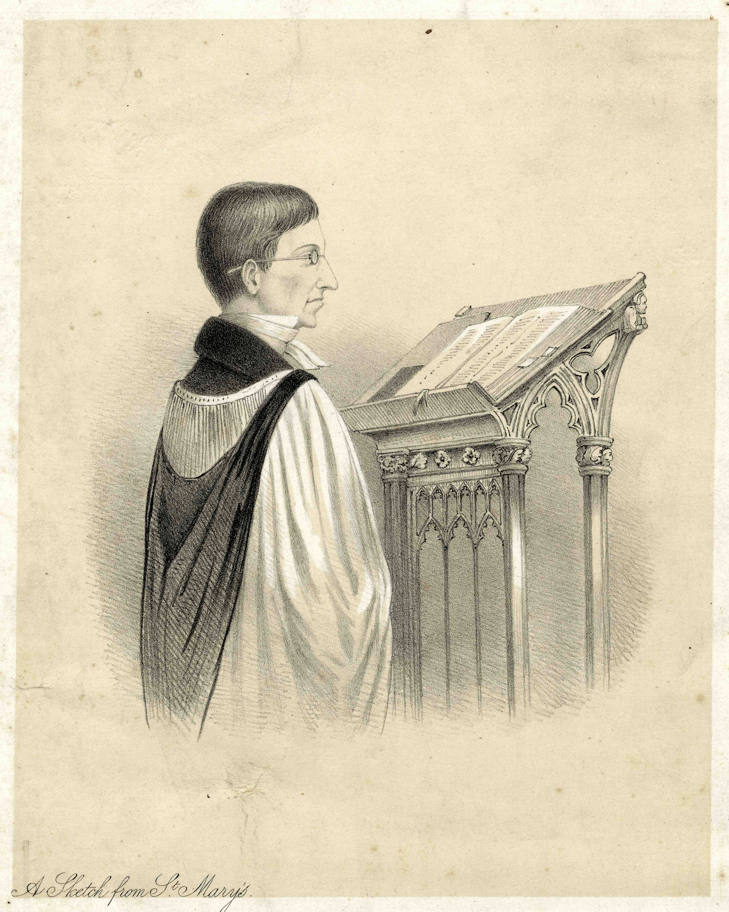
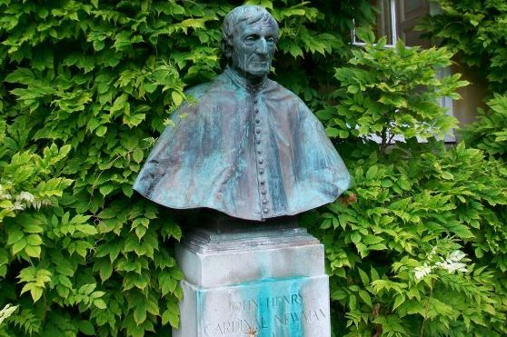

{{ n.caption }}
{{ n.date }} · {{ n.kind }}
{{ n.title }}
{{ para }}
{{ n.extractLabel }}
{{ para }}
{{ heroCaption }}
Trinity · 1817
Newman came up to Trinity College at sixteen, and kept his rooms there in mind all his life.
Oriel · 1822
Elected Fellow of Oriel — the turning point, he said, of his life.
St Mary's · 1828–43
Vicar of the University Church, where his sermons drew Oxford to its four o'clock service.
{{ nextSeminar.when }}
{{ nextSeminar.title }}
{{ nextSeminar.speaker }}
{{ nextSeminar.where }}
Seminars are open to all. Join the newsletter to receive each term's card and occasional notices of events, book launches and conferences.
News
Proclamations, audiences, publications and gatherings — the events that mark Newman's place in the life of the Church, the colleges and the world of letters.
{{ n.caption }}
{{ n.date }} · {{ n.kind }}
{{ para }}
{{ n.extractLabel }}
{{ para }}
Seminars
Each term the Network gathers for a series of papers on Newman — his theology, his prose and verse, his Oxford, his afterlife in the Church and the academy. Speakers come from across the colleges and from far beyond them; the audience is anyone with an interest, and questions are warmly encouraged.
Seminars are free and open to all. Papers are followed by discussion and refreshments. In time we hope speakers may share the text of their papers here.
To receive the term card by email, write to Newmanseminars@gmail.com.
Details of speakers and papers will be posted here as they are confirmed.
{{ t.term }}
{{ s.year }}
{{ s.what }}
Newman
Newman came up to Trinity College in June 1817, a boy of sixteen, and Oxford held him for the next twenty-eight years. He read widely and nervously, took a disappointing fourth in 1820, and then in 1822 was elected Fellow of Oriel — the event he called the turning point of his life.
As Vicar of St Mary the Virgin from 1828 he preached the sermons that emptied other churches at four o'clock on Sunday afternoons; as tutor, then as the leading voice of the Oxford Movement, he made the city the centre of a religious argument that ran through the 1830s. He left for Littlemore in 1842 and for Rome in 1845, and did not return for thirty-two years — coming back in 1878 as the first Honorary Fellow of Trinity, the college he had loved best.
Today a statue stands in the front quadrangle of Oriel and a bust in the garden at Trinity — the two colleges that between them shaped an Oxford life.

‘A Sketch from St Mary's’ — Newman at the lectern of the University Church.

The bust at Trinity College.
The fuller chronology of Newman's Oxford years, with places and sources, is being prepared for this page.
Conferences
Gatherings the Network hosts or takes part in, in Oxford and elsewhere.
{{ c.listLabel }}
{{ p }}
People
The Network is a company of friends rather than an institution: scholars, students, clergy and readers who care about Newman and meet to read him together. Names and short biographies will be added here with their owners' consent.
{{ m.name }}
{{ m.role }}
{{ para }}
If you would like to be listed, or to join the Network, write to Newmanseminars@gmail.com.